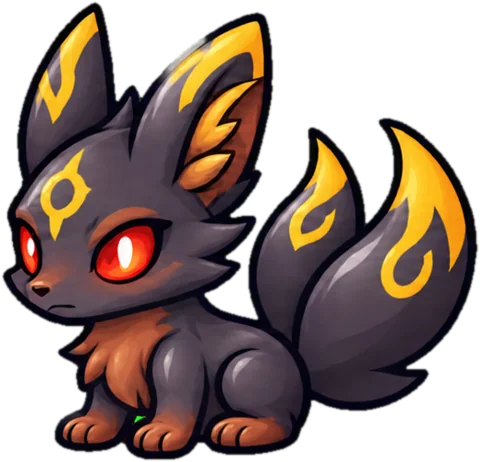

 FireDark
FireDarkTap a stage to read its story.
Embpup is a compact black fox kit with a fiery orange-tipped tuft on its head and burning ember-orange eyes that glow in the dark of the Shadow Caves. Its fur is jet-black with faint dark-charcoal patterning, and thin flame-wisps lick upward from its ears and collar fur when it is excited. It navigates the caves entirely by heat-sense, padding through passages with absolute confidence even in total darkness. It will curl against the chest of any sleeping traveler, providing warmth and unsettling dreams in equal measure.
Field note: Embpup's ear-flames burn hotter when it hears a lie - Shadow Cave travelers use it as an impromptu truth detector.
Shadow Caves. Embpup and its family are found in the Shadow Caves. See everyone who lives there.
Share a Bond Food that matches its types to become friends. Embpup loves:
A Bond Food is not a trick. It joins your spirit with the Kimuro's spirit, and only when it chooses you.
Print the Kimuro adventure packs: mazes, cards, a board game and Bond Mark medals.
See the printable packs